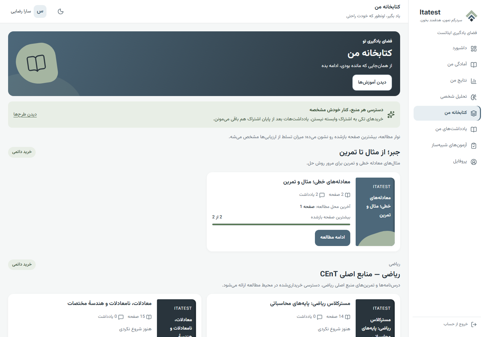
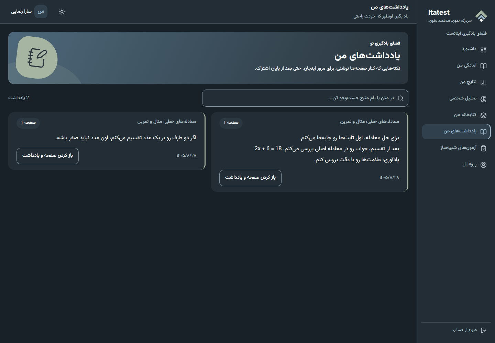
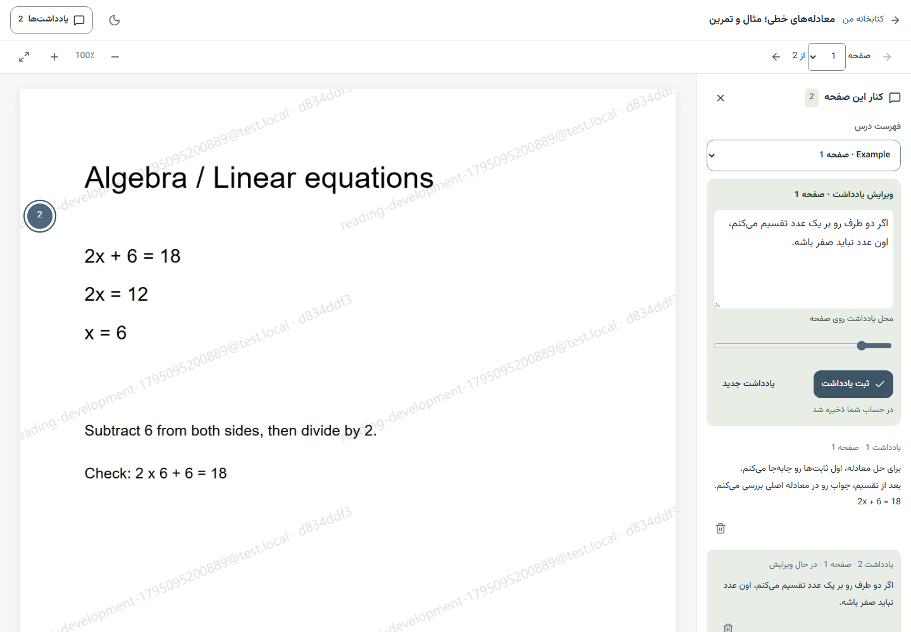
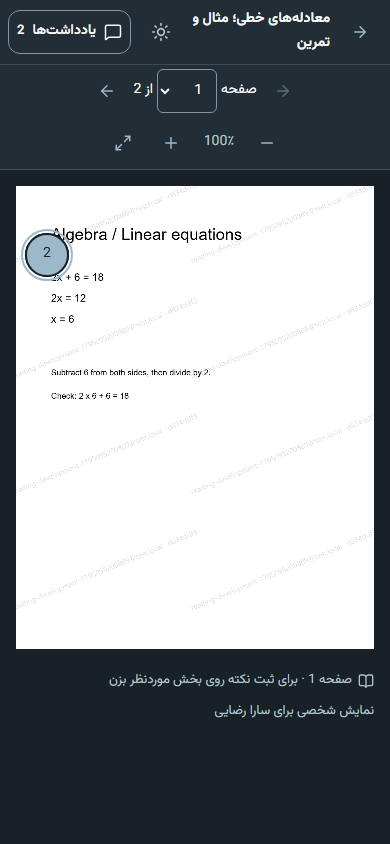
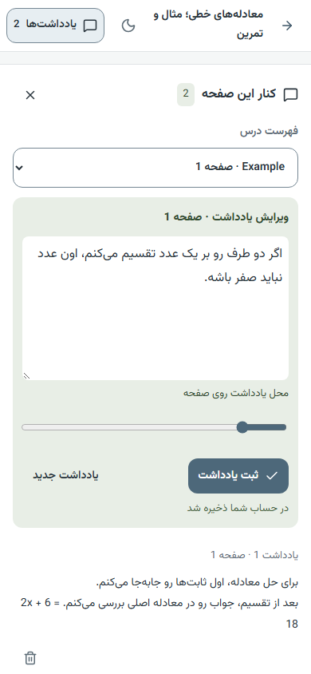
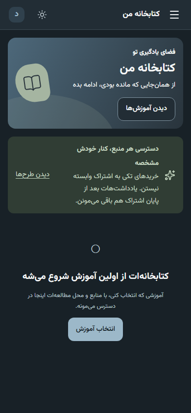
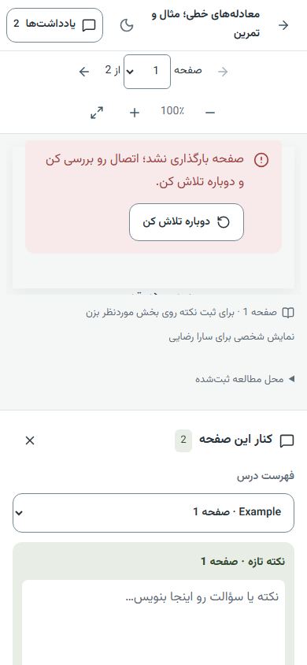

Phase 6 — Library, notes and reading
Seven AFTER-only viewport images for explicit visual approval. Real connected local preview operations with disposable learners and an administrator-uploaded educational PDF. One recovery image uses an explicitly injected page503. No production data, real payment, BEFORE images or comparison pairs.
English report · Evidence details and reproduction

Library · Light · 1440 × 1000Connected resources and positions; fallback covers do not request protected pages.

Notes · Dark · 1440 × 1000Actual persisted notes, existing search and links to the original page.

PDF reader · Light · 1440 × 1000Existing authorized page rendering and note persistence; quiet reading environment.

Mobile reader · Dark · 390 × 844Document fidelity preserved. Zoom and intentional panning stay inside the document viewport.

In-reader notes · Light · 390 × 844Existing notes action scrolls and focuses the panel. Saved feedback follows a successful operation.

Empty library · Dark · 390 × 844Real separate preview account with no entitlements.

Page recovery · Light · 390 × 844Injected HTTP503, explicitly labeled. Retrying returns to the real authorized document.
Phase 5 is approved and closed with its documented limitations retained. Phase 6 awaits explicit visual approval. Phase 7 has not started. No commit, push or deployment.